十四年、十万八千里、九九八十一难——中国最早的大型复杂项目管理案例，藏在唐僧师徒的取经路上。
先看一组数字，再看它为何是最复杂的 ICT 项目。
用项目管理的眼光重读西游，数字会说话。
唐太宗在长安化生寺亲送御弟三藏西行，颁发通关文牒——这就是项目章程的签署仪式。
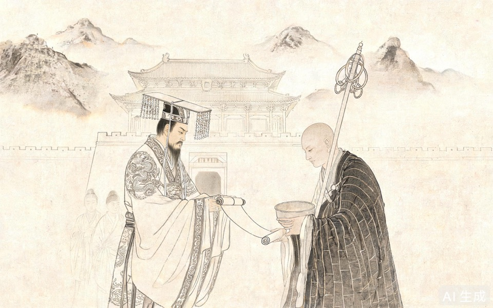
跨地域、多干系人、高风险、长周期、资源受限——五重复杂性，尽在西行路上。
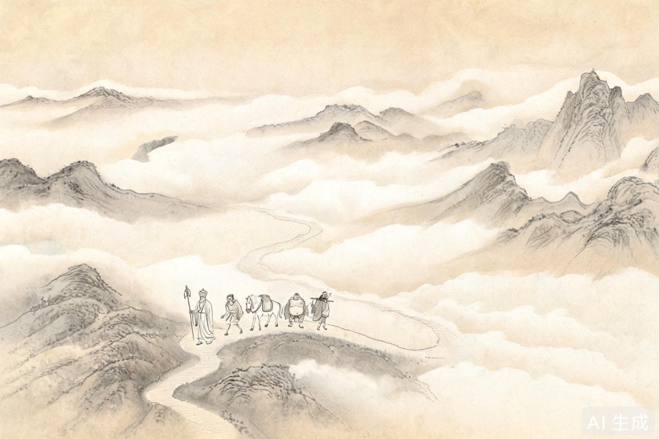
每一难，都是一堂项目管理课。
整合管理的核心是"统筹"。唐僧不拔刀、不化斋、不打妖，但他把四个性格迥异的徒弟拧成一股绳，始终对齐"取经"这个唯一目标。
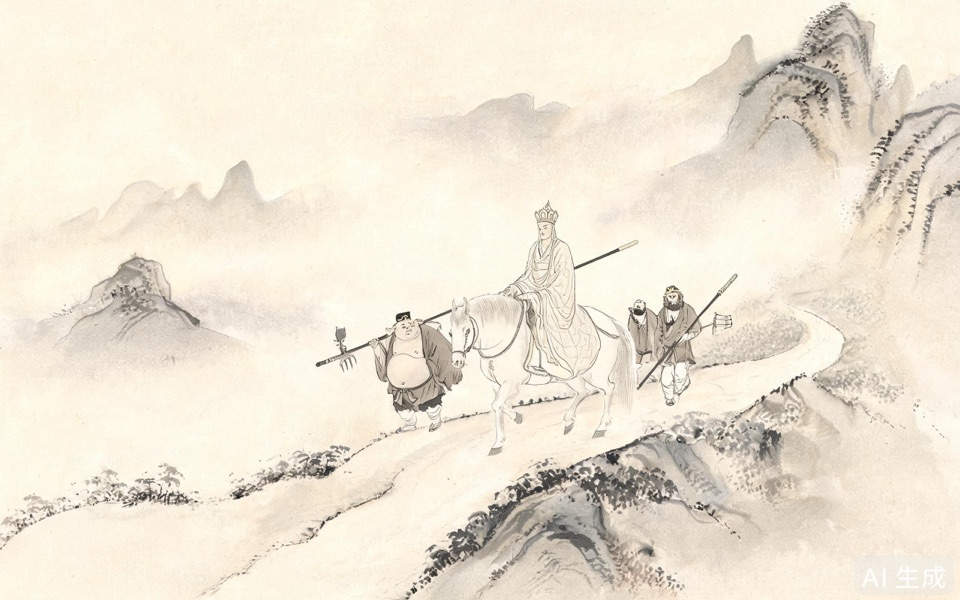
范围管理回答"做什么、不做什么"。取经项目的交付物是"大乘真经"，WBS 可拆为：上路 → 收徒 → 历劫 → 到灵山 → 取经 → 东归 → 译经传法。
最经典的范围陷阱：到了灵山，阿傩伽叶先给的是"无字真经"——这就是交付物验收不合格，被项目发起方打回重做的典型案例。
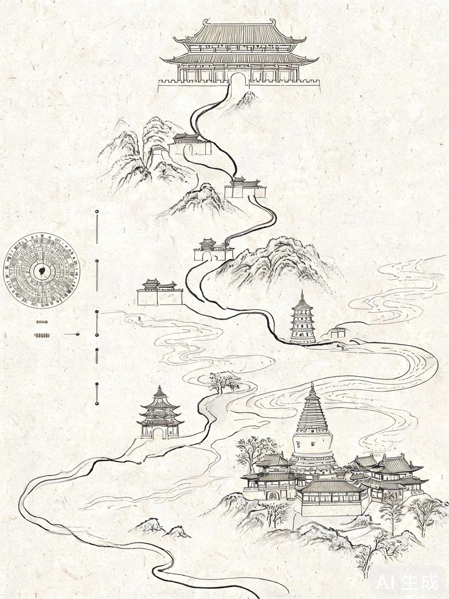
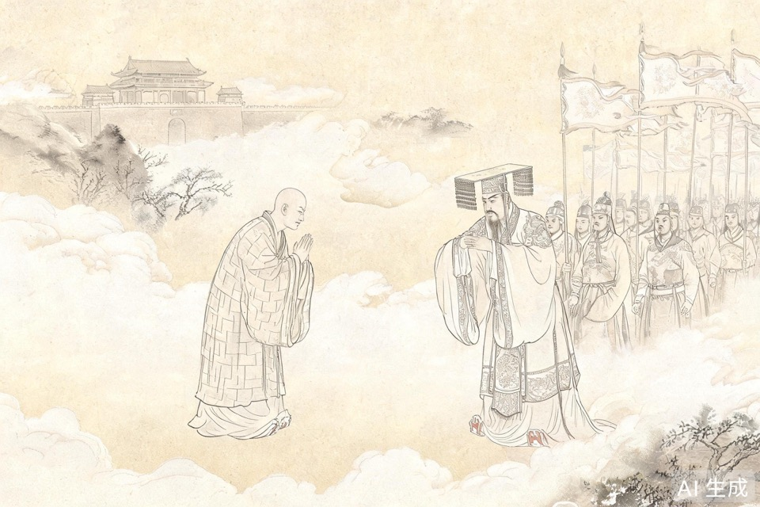
取经项目几乎是"零预算"运行：食靠化缘、宿靠借宿、行靠步行。成本管理的精髓在于——用最小资源消耗完成最大价值交付。
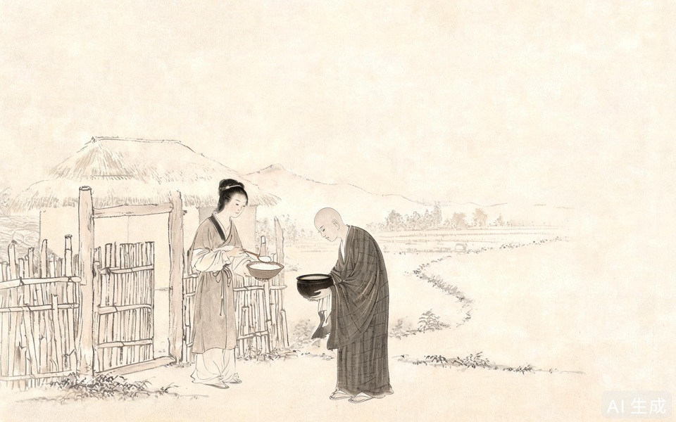
质量不是验收那一刻"检"出来的，而是一路"管"出来的——标准提前定、过程边控、交付按标准验。
项目中途，团队成员想退出、想改目标——项目经理的整合能力，此刻最受考验。
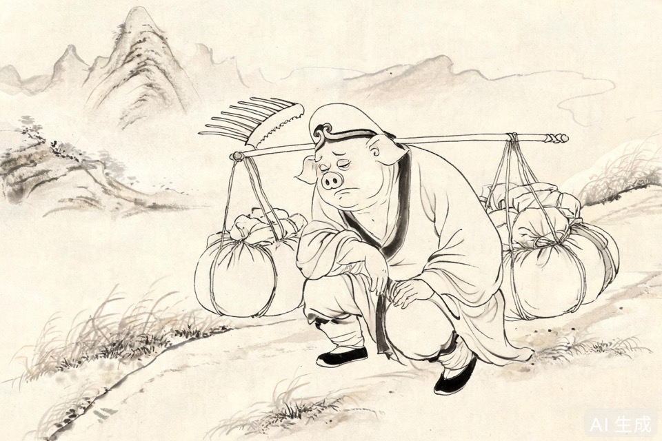
资源、沟通、风险、采购、相关方——五域并讲。
资源管理回答"谁做什么"。取经团队是经典的角色分工矩阵（RACI）：唐僧是目标对齐者，悟空是技术攻坚，八戒管后勤，沙僧做稳定支撑。
白龙马是"基础设施层"——驮载项目经理，全程沉默但不可或缺，就像 ICT 项目里默默运转的服务器和网络。
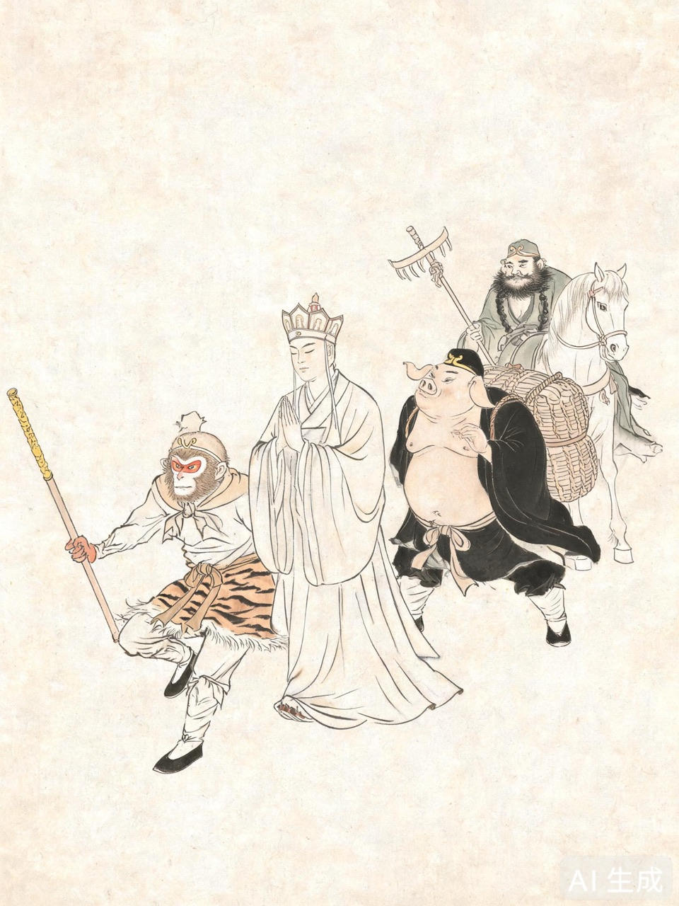
取经路上最大的悲剧几乎都源于沟通失败：三打白骨精，悟空如实汇报"是妖"，唐僧信息过滤失误信谗言，导致核心成员被逐——典型的沟通失灵。
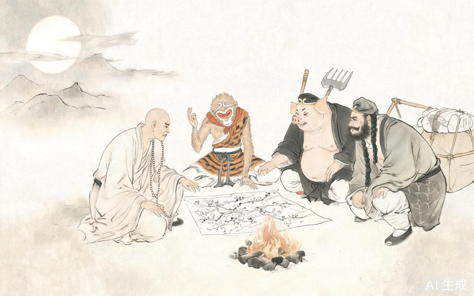
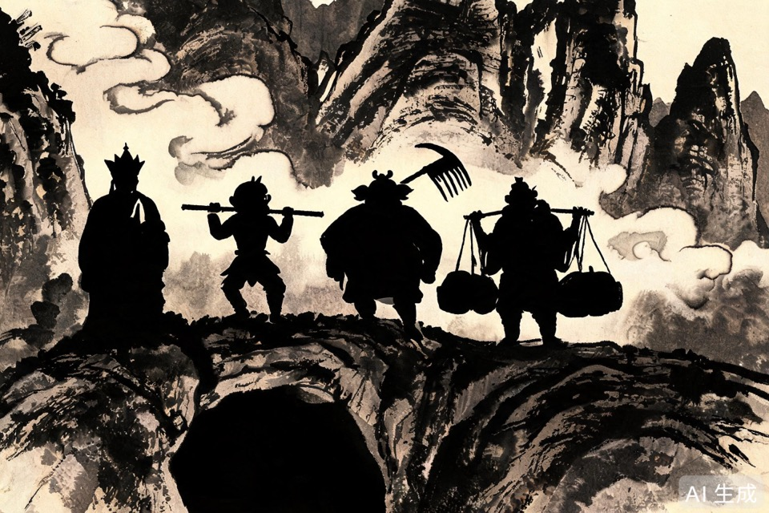
当自力无法解决时，向上界"采购"外援：请观音收妖、借天兵助阵、向龙王借雨——这就是采购管理的精髓：识别什么该自做、什么该外购。
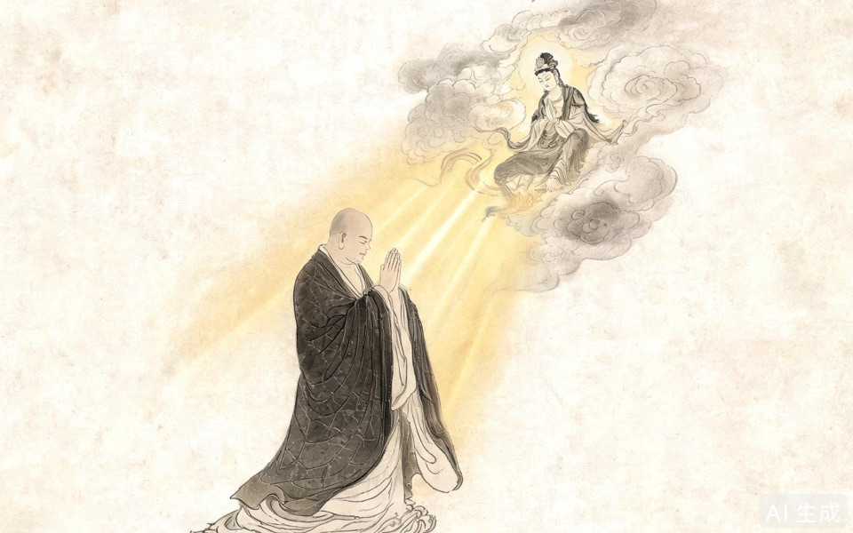
从"打怪升级"到"系统化交付"——这是项目经理视角的根本转变。
从神话回到工位，我们能带走什么？
"敢问路在何方？ 路在脚下。"
The road is under your feet.
复杂项目的答案，从来不在远方，而在每一步的推进里。
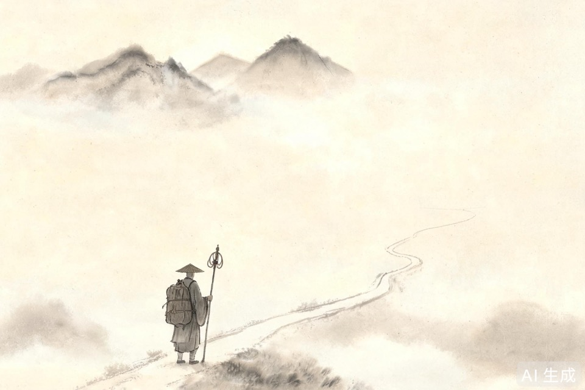
整合→唐僧统筹｜范围→真经WBS｜进度→八十一难｜成本→化缘零预算｜质量→真假美猴王｜资源→师徒角色｜沟通→三打白骨精｜风险→火眼金睛｜采购→请观音收妖｜相关方→满天神佛
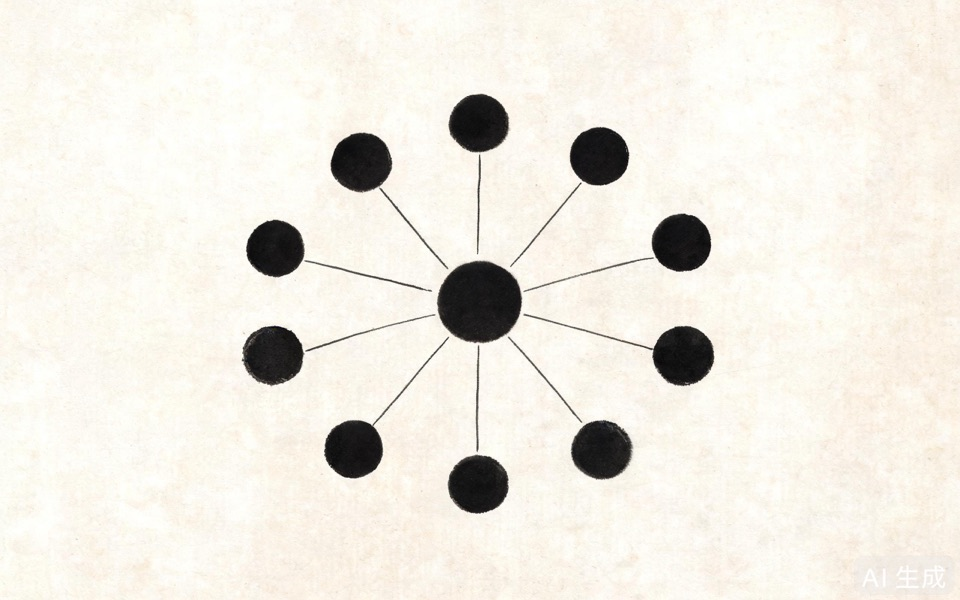
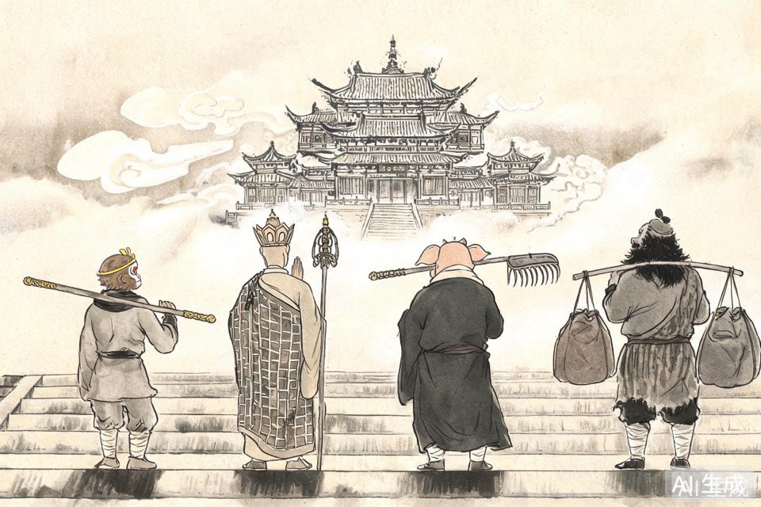
谁是你项目的"唐僧""悟空""八戒"？你的"八十一难"又在哪一段路上？
愿你在每一个复杂 ICT 项目里，都能像唐僧师徒一样——目标坚定，团队互补，逢凶化吉，终成正果。